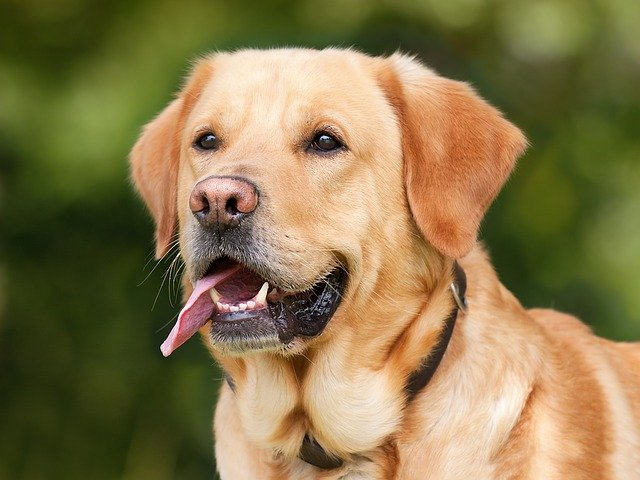

Golden Retriever
개의 품종 중 하나로, 원산지는 영국의 스코틀랜드 지역이다. 비슷하게 생긴 래브라도 리트리버가 원형이다. 이름대로 윤기가 흐르는 크림빛 또는 금빛의 풍성한 털이 가장 큰 특징이며 은은하게 귀티가 흐르는 인상이다. 마당이 있는 집이 일반적인 미국과 영국, 또한 영국의 직할 속령이었던 아일랜드, 캐나다, 오스트레일리아나 뉴질랜드에서 자주 볼 수 있는 견종이라고 한다. 신장 51~61cm, 체중 25~40kg 정도이다. 대한민국 한정으로는 누렁이, 인절미[1]와 골댕이(=골든 댕댕이)라고도 불린다.# 영미권에서는 너겟이라고 하는 모양. 성격이 온순해서 '천사견'이라는 별명도 있다. 온순한 성미와 똑똑한 것으로 인해 맹인 안내견으로도 유명하다.
리트리버는 원래 사냥개 중에서도 총에 맞은 새를 물어오는 것(Retriever)을 목적으로 교배된 견종이다. 당연히 주인이 총을 쏘기 전에 짖거나, 난리를 피우면 새가 날아서 도망갈 테니 주인이 물어오라는 지시를 내릴 때까지 얌전히 명령에 복종하는 게 체질적으로 몸에 밴 견종이다. 다만 엄연한 대형견이자 사냥개임을 주지해야 안전사고를 방지할 수 있다. 자주 일어나는 일은 아니지만 마음만 먹는다면 사람을 해칠 수 있다. 만약 이빨을 드러내거나 그르릉거리는 적대적인 시그널을 보낸다면 '골든 리트리버이니까 위협만 하겠지' 같은 안일한 마음으로 대하지 말고 충분히 물러나야 한다.
참조: 나무위키 - 골든리트리버
Golden Retriever
- ● 기본특성
- ● 단점
- ● 키울 시 주의점
- ● 파생 혼종견